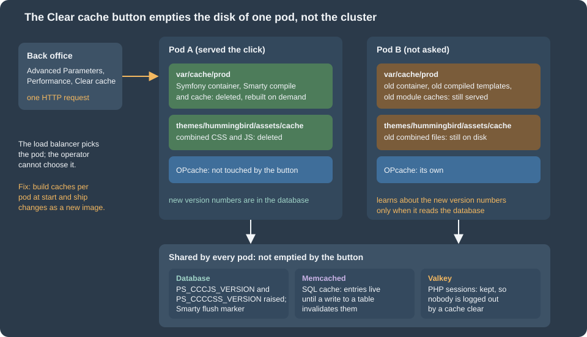

Cloud: Cache, Sessions and the Back Office in a Cluster
|
This content was generated with the assistance of AI and should be verified against the official documentation before being relied on in production. |
This page was written against PrestaShop 9.2.0 (the source of the 9.2.0 tag and the official prestashop/prestashop:9.2.0-fpm image with PHP 8.5.12), Amazon ElastiCache for Valkey (engine versions 8.2, 9.0 and 9.1) and for Memcached (1.6.22 is the newest version listed), Kubernetes 1.36 and 1.37 on EKS, nginx 1.29 (1.29.8 in the tests) and Helm 4.3, and checked on 2026-10-29. Every PrestaShop statement was read in the 9.2.0 source and every container fact on the official image; the ElastiCache facts come from the AWS documentation. Nothing was deployed in an AWS account, so no pod talked to a real ElastiCache endpoint, and the PHP extensions redis and memcached were not compiled here (see Version notes and what was not verified).
A PrestaShop shop on one server keeps a lot of state on that server’s disk: three compiled kernels, compiled templates, combined stylesheets, module caches, and in the back office the very files of the modules. On several pods the same shop has several disks, and a button that works on a single server, Clear cache, starts to lie. This page lists every cache and every piece of login state of PrestaShop 9.2.0, says which of them must become shared and which must stay per pod, and gives the configuration for the shop of the running example, Pocket Coffee on the cluster pocketcoffee-prod, built in Cloud: EKS Infrastructure and Helm Deployment. It also explains why changes made in the back office (modules, themes, updates) must not be done on a running cluster, and how to restrict who can reach the back office at all.
The single-server tuning of the same caches is on Performance and Caching and is not repeated; the architecture around this page is in Cloud: Reference Architecture, the writable paths and the shared volume in Cloud: Shared Media and Writable Paths, and the release sequence that replaces back-office changes in Cloud: Releases and Upgrades. The WordPress counterpart of this page, with a persistent object cache and no PHP sessions, is Object Cache, Sessions and Cron in a Cluster.

Every cache and every piece of login state
PrestaShop 9.2.0 has eleven things that behave like a cache or like a session. The column "Per pod" says what happens if nothing is done: each pod then has its own copy, built from its own requests.
| What | Where it lives | Per pod? | What to do in a cluster |
|---|---|---|---|
Symfony container and routes (three kernels: |
|
Yes |
A per-pod |
Smarty compiled templates and cached module output |
|
Yes |
Per pod; switch Multi-front optimizations on (Smarty: the multi-front switch). |
Module-owned caches (for example the main menu JSON of |
Files under |
Yes |
Per pod; not covered by any flush marker. A restart is the clear (Building the cache per pod). |
Class index |
|
Yes |
Per pod, rebuilt on the first request. |
Downloaded module and Addons lists |
|
Yes |
Per pod and disposable; see the writable paths page. |
Combined and compressed CSS and JavaScript (CCC) |
|
Yes |
Disable it, or share that one directory (Combined and compressed assets). |
SQL cache of the |
APCu (per pod), Memcached or XCache; table |
APCu yes, Memcached no |
Memcached on ElastiCache, or off (The SQL cache: Memcached or nothing). |
Doctrine metadata, query and result cache |
A Symfony cache pool: array, APCu or Memcached |
Array and APCu yes |
Leave on the default; read the caveat in The SQL cache: Memcached or nothing. |
OPcache and realpath cache |
The PHP process of each pod |
Yes |
Nothing to share; build the image so that files never change under a running pod. |
PHP session (flash messages, CSRF tokens of the Symfony back office) |
PHP’s session handler, |
Yes |
Valkey (PHP sessions in Valkey). |
Login state and cart of customers and employees |
The encrypted |
No (in the browser and the database) |
Identical keys on every pod (The cookie and its three keys). |
Two groups come out of this. The derived files are cheap to rebuild and can stay per pod if nothing ever expects them to change on all pods at once. The state (sessions, the cookie keys, the database) must be shared, and it is what makes a pod disposable. Everything else on this page is the consequence of that split.
The "Clear cache" button reaches one pod
The button Advanced Parameters > Performance > Clear cache calls clearCacheAction of PerformanceController, which runs a chain of six clearers (prestashop.core.cache.clearer.cache_clearer_chain in src/PrestaShopBundle/Resources/config/services/core/cache.yml):
-
the Symfony cache of every kernel (
SymfonyCacheClearer), run at the end of the request; -
the Smarty compiled and cached files (
SmartyCacheClearer); -
the XML files in
config/xml/(XmlCacheClearer); -
the files of the theme in
themes/<theme>/assets/cache/andthemes/<theme>/cache/, plus the two version countersPS_CCCJS_VERSIONandPS_CCCCSS_VERSIONin the database, each raised by one (MediaCacheClearer,Media::clearCache()); -
the class index (
ClassIndexCacheClearer); -
the Doctrine cache (
DoctrineCacheClearer).
Items 1 to 3 and 5 are file operations on the disk of the pod that happens to answer the request. The load balancer chose that pod, not the operator. The other pods keep their old compiled container, their old compiled templates and their old module caches, and they go on serving them. Only the database change of item 4 is visible to all of them, and it is visible only through the file names (see Combined and compressed assets). The same is true of every other action that clears the cache as a side effect: saving a module’s configuration, installing a module, changing a currency or a language, and importing data.
The button does not touch sessions, so nobody is logged out by it, in a cluster or not.
Pocket Coffee settles this with three rules.
-
Nobody clears the cache of a production cluster from the back office. The action needs the
deleteright on the Performance tab (is_granted('delete', request.get('_legacy_controller'))inclearCacheAction), so remove that right from every profile except the one or two SuperAdmin accounts, and tell those accounts not to use it. A SuperAdmin is not restricted by permissions, which is why the second line of defence, in Why the back office must not change code, matters. -
The cache of a pod is built when the pod starts, from that pod’s own environment, and thrown away when the pod ends. A new image is a new set of caches.
-
"Clear the cache" in a runbook means a rolling restart:
kubectl rollout restart deployment/pocketcoffee-web. Every pod starts with a freshly built cache, one after the other, with no downtime, because that is what a rolling update does. A content change that depends on a file cache (the main menu is the example the performance page documents) becomes visible on all pods at the end of that restart.
Building the cache per pod
The obvious plan is to run bin/console cache:warmup --env=prod while the image is built, so that pods start with a ready cache. It does not work, and the reason is in the configuration files. app/config/config.yml imports set_parameters.php, which runs while the Symfony container is compiled and calls $container->setParameter() for every key of app/config/parameters.php. doctrine.yml then refers to %database_host%, %database_name%, %database_user% and %database_password%. A compiled container contains the values of its parameters, so a cache warmed during docker build contains the database host that existed during docker build (a placeholder, or nothing), and the cached container is used as it is in production mode. This was derived from reading the 9.2.0 source; a running container was not available for the experiment (see Version notes and what was not verified), so confirm it once on your own image by warming with one value and reading the cached container for it.
The fix is to build the cache when the pod starts, with the pod’s own environment, in an init container of the same image that writes into the emptyDir mounted at var/cache. The Deployment of the web pods in Cloud: EKS Infrastructure and Helm Deployment does exactly this, and the admin Deployment in [admin-deployment] repeats it. The command is the one of the init container:
for app in admin front; do
php bin/console cache:warmup --env=prod --app-id="$app"
done--app-id is a global option of PrestaShop’s console: without it the command uses the admin kernel, and the kernels front and admin-api each have their own cache directory (getCacheDir() in app/AppKernel.php). A shop that uses the Admin API adds admin-api to the loop. The cost is a few seconds at the start of each pod and one writable path per pod, var/cache, sized in the chart as a 1Gi emptyDir; the Smarty templates are not warmed by this command and are compiled by the first requests that use them, so the readiness probe of the Deployment should load a real page, not only answer from nginx, before the pod joins the load balancer.
Smarty: the multi-front switch
PrestaShop already has a mechanism for several front servers with local caches, and it is a setting that is off after the installation: Advanced Parameters > Performance > Smarty > Multi-front optimizations (PS_SMARTY_LOCAL, default 0 in install-dev/data/xml/configuration.xml). When it is on, config/smarty.config.inc.php builds a SmartyCustom object instead of the plain Smarty. Its clearCompiledTemplate() and clearAllCache() no longer delete files; they write a timestamp into the table ps_smarty_last_flush, and fetch() and createTemplate() compare that timestamp with the time of the pod’s own last_flush file and clear the pod’s local copy when the database is newer. The cache of module output is tracked the same way in ps_smarty_lazy_cache. So a Smarty clear on pod A reaches pod B on its next request.
What it does not cover is everything that is not Smarty: the Symfony container, the module-owned files such as the main menu JSON, the class index and the combined assets. It costs one extra query per request for the flush marker. Pocket Coffee switches it on in the release Job, once, as a configuration value in the database:
php bin/console prestashop:config set PS_SMARTY_LOCAL --value=1 --env=prodThe official page advises against this switch for a single server, and the devdocs do not describe a cluster test of it. The code was read, not load-tested with several pods: switch it on in staging with two pods and check that a module that caches its output (the performance page lists six that do) shows a change on both.
The SQL cache: Memcached or nothing
The SQL cache of the Db class stores the results of SELECT queries and invalidates them by table. In 9.2.0 it has exactly four backends, the classes of classes/cache/: CacheApc, CacheMemcache (extension memcache), CacheMemcached (extension memcached) and CacheXcache. There is no Redis or Valkey backend in the core, which is why the Valkey group of this page serves sessions and not the SQL cache. For several pods the shared choice is CacheMemcached against an ElastiCache for Memcached cluster. APCu is faster but per pod, so a write on pod A does not invalidate the entries on pod B, and the performance page already warns about that.
Decide with a measurement. A hit on a network cache still costs a round trip to the cache node, and a PrestaShop home page runs hundreds of queries. On a fast RDS instance the round trip to Memcached can cost about as much as the query it saves, so the cache pays for expensive queries and not for cheap ones. The performance page measured the effect of APCu in memory (about 76 ms down to 39 ms on the warm home page); nobody measured Memcached over the network here. Test with the real shop, a realistic catalogue and one pod before and after, and leave the switch off if the median does not move. The chart of the Helm page exposes it as the value shop.cacheEnabled, which is false by default, so turning it on or off is a release, not a code change.
When it is on, three things have to be in place.
-
The extension
memcachedin the PHP image, which the official image does not contain:php -monprestashop/prestashop:9.2.0-fpmlists onlyZend OPcachefrom this family, noredis,memcachedorapcu. It is installed from PECL in the image build, with the development packages of libmemcached and zlib, and enabled withdocker-php-ext-enable; check that the release you pick supports your PHP version. The image is the subject of Cloud: Production Container Image, which owns that Dockerfile. -
Two keys in
parameters.php:ps_cachingisCacheMemcachedandps_cache_enableis a real PHP booleantrue(a string such as"1"is not enough:set_parameters.phpteststrue === $parameters['parameters']['ps_cache_enable']before it selects a Symfony cache driver). -
The server list in the table
ps_memcached_servers(columnsip,port,weight). The list is stored in the database, not in a file, and the back-office form that edits it (Performance > Caching > Add server) writes only that table, so the release Job fills it from the cluster’s endpoints:
-- Run once by the release Job, after the first install: the SQL cache servers of the shop.
-- The table is ps_memcached_servers (prefix + memcached_servers); "ip" accepts a host name.
DELETE FROM ps_memcached_servers;
INSERT INTO ps_memcached_servers (ip, port, weight) VALUES
('pocketcoffee-prod-memcached.abc123.0001.euw1.cache.amazonaws.com', 11211, 1),
('pocketcoffee-prod-memcached.abc123.0002.euw1.cache.amazonaws.com', 11211, 1);Source: PrestaShop 9.2.0: CacheMemcached
The host names are placeholders for the node endpoints of the cluster pocketcoffee-prod-memcached. PrestaShop adds each row with Memcached::addServer() and does nothing else: it has no ElastiCache Auto Discovery. The AWS documentation says Auto Discovery needs a client library that supports it, so the rows list the node endpoints, one per node, and a change in the number of nodes means a change in the table. CacheMemcached sets the key prefix to the table prefix (ps_) and, when igbinary is available, the serializer to igbinary.
Four limits of that integration are not hidden by the managed service.
-
No TLS and no authentication. The class sets no SASL credentials and no TLS option. ElastiCache for Memcached supports in-transit encryption from engine 1.6.12, but nothing in
CacheMemcacheduses it, and whether the PECLmemcachedbuild in your image can do TLS was not tested. Keep the cluster in the private subnets with a security group that allows port 11211 only from the node security group, and remember that query results are in it. -
No replication. A lost node loses its share of the cache; PrestaShop rebuilds the entries from the database. The cluster is a cache, never a place for state.
-
The Doctrine pool is another cache. With
ps_cache_enabletrue andps_cachingCacheMemcached,set_parameters.phpsets the Symfony cache pool tocache.adapter.memcachedfor the Doctrine metadata, query and result cache (config_prod.yml). No service ofapp/orsrc/sets a DSN for it, and Symfony’s default provider for that adapter ismemcached://localhost, so each pod would look for a Memcached on itself. The effect (a disabled cache, or errors in the log) was not tested; look at the logs of the first pod after switching the SQL cache on, and be ready to leave the legacy cache off. -
The back-office form writes
parameters.php. Saving Performance > Caching setsps_cache_enableandps_cachingthroughPhpParameters, which rewrites the file; see The parameters file must not be rewritten for why that must never happen on a pod.
PHP sessions in Valkey
What uses a PHP session
The WordPress pages of this site say there are no PHP sessions in WordPress. PrestaShop 9.2.0 is different: framework.session.handler_id: ~ in app/config/config.yml selects PHP’s native session handler for the Symfony kernels, so the pages of the back office that run under Symfony keep their flash messages and their CSRF tokens in the session, and the front controller starts a PHP session for the notifications that survive a redirect (session_start() in classes/controller/FrontController.php). Who is logged in is a different matter and does not use $_SESSION (see The cookie and its three keys). With the default handler (session.save_handler = files in the image’s php.ini, and session.gc_maxlifetime = 1440) the file is on the disk of one pod, so a form that was displayed by pod A and posted to pod B fails its CSRF check and a flash message disappears: the symptom is a back office that says "Invalid token" for no reason.
There are two ways out. Sticky routing (the load balancer sends the same browser to the same pod) hides the problem until that pod is replaced, which is every release; it is a stopgap for a small shop, not a design. A shared session store removes the problem, and Valkey on ElastiCache is the store of this page: the second group of the cluster, pocketcoffee-prod-valkey, separate from the Memcached cluster, because the two have opposite rules. A cache may lose and evict entries; sessions must not be evicted silently. The group of Cloud: EKS Infrastructure and Helm Deployment therefore uses maxmemory-policy noeviction and no snapshots, and has TLS and an AUTH token; size it with a margin and raise an alarm on its memory before it is full, because a full group refuses new sessions and nobody can open the back office. The creation of the group and its secret pocketcoffee/prod/valkey are in that page and in ElastiCache and other data services, and the WordPress page on the same service explains the choice of engine and of cluster mode.
The PHP-FPM pool
The official image has no redis extension (the same php -m check as above) and uses files. The image build installs phpredis from PECL (again: owned by the container-image page), and the pool file that the chart mounts into every pod sets the handler:
; zz-pocketcoffee.conf, mounted in /usr/local/etc/php-fpm.d/ after the image's own pool files.
[www]
clear_env = no
; PHP sessions in Valkey, with TLS and the AUTH token (cluster mode disabled, the primary endpoint).
; PHP-FPM expands ${NAME} from the environment of the pod when it starts the pool.
php_admin_value[session.save_handler] = redis
php_admin_value[session.save_path] = "tls://${VALKEY_HOST}:${VALKEY_PORT}?auth=${VALKEY_AUTH}&prefix=pocketcoffee:sess:&timeout=1.5&read_timeout=2.5&persistent=1"
php_admin_value[redis.session.locking_enabled] = 1
php_admin_value[redis.session.lock_expire] = 30
php_admin_value[redis.session.lock_wait_time] = 20000
php_admin_value[redis.session.lock_retries] = 500Source: phpredis: PHP session handler
What each line does, and what was checked:
-
tls://and notrediss://. In phpredis, the scheme of an item ofsession.save_pathis the transport of the PHP stream: the extension builds the address asscheme://hostfrom the URL it parses (redis_session.c), sotls://opens a TLS stream and arediss://URL, the scheme used by clients such as Predis or Symfony’s Redis adapter, is not a stream transport. phpredis documentstcp://andunix://for the session path;tls://is the transport it documents forconnect()and the session code passes it through, but a session over TLS to a real ElastiCache endpoint was not run here. -
auth=with the token.authtakes a string (the token of an AUTH-token group, which is what the group of the Helm page uses) or an array of one or two elements (a user name and a password, writtenauth[]=twice, for a group with role-based access control, which this series does not use). A value that contains&,#,%or+has to be URL-encoded, so generate the secret from letters and digits only. -
${VALKEY_HOST}and its siblings come from the environment of the pod; the Secretpocketcoffee/prod/valkeysuppliesVALKEY_HOST,VALKEY_PORTandVALKEY_AUTH(the AUTH token), and the ExternalSecret of the chart puts them into the pod environment. The expansion of${NAME}in a pool file was tested with the officialphp:8.4-fpmimage, a pool file with these lines, environment variables set on the container and a FastCGI request forini_get('session.save_path'): the pool returned the string with the values substituted.clear_env = nois already the setting of the image’sdocker.conf; it is repeated so that the next reader sees thatparameters.php, which readsgetenv(), depends on it. -
persistent=1,timeoutandread_timeout. The README says the default connection timeout is very high (86400 seconds) and the default read timeout is0, "meaning PHP can hang indefinitely" if Valkey stops answering, and recommends a low value in production. A hung session read holds a PHP-FPM worker, so the values above keep a failure to a couple of seconds. -
prefix. Keys areprefixfollowed by the session id. The prefix identifies the shop if one group ever serves another one. -
Locking. The back office fires several AJAX requests in parallel (the page loads its toolbar, the notifications and its widgets together), and without a lock two requests that both write the session lose one of the writes. phpredis supports session locking only for a single master with replicas, which is the cluster-mode-disabled group of this page;
lock_expire(seconds),lock_wait_time(microseconds) andlock_retriesbound the waiting. The cost is that one request of a browser waits for another. The values are a starting point and were not load-tested.
php_admin_value is used instead of php_value so that no script can change the handler at run time. The same lines work in a php.ini file of the image (session.save_handler = redis, and so on); there PHP expands ${NAME} from the environment too, which was tested as well.
What happens when Valkey is down was not tested. Expect the back office to fail at session_start(); the front office starts a session only to carry notifications, so test whether a catalogue page still renders with the group blocked (a security group rule is enough for the test) before you rely on it. Because the login is in the cookie and the database, a Valkey failover or a restart of the group does not log anybody out; it empties the CSRF tokens and the flash messages, and the next request creates them again.
The cookie and its three keys
The login state of customers and employees is not in the PHP session. It is in an encrypted cookie that PrestaShop’s Cookie class writes (PrestaShop- followed by a hash, one for the front office and one for the back office), plus two tables: ps_employee_session and ps_customer_session hold the session id and the token that the cookie carries. A request therefore carries its own login to whichever pod receives it, provided that every pod can read the cookie. Three values from app/config/parameters.php decide that:
| Parameter | Used for |
|---|---|
|
|
|
|
|
|
So the three values must be identical on every pod, on every release, for the life of the shop. A pod that has other values sends the browser back to the login page when it handles a request (the checksum or the decryption fails) and the next pod that has the old values accepts it again, which is a symptom that looks random. A new random value at every release logs everybody out; a changed cookie_key also breaks the legacy password hashes. The same reasoning applies to secret (the Symfony secret) and to the API keys of the Admin API; Cloud: Autoscaling, Observability, Backups and Security covers rotation, which is a planned operation and never a side effect of a deployment.
How the three values get there depends on whether the shop already exists.
-
A shop that is migrated copies the three values (and
secret, and the API keys) from the old server’sapp/config/parameters.phpinto the Secrets Manager secretpocketcoffee/prod/prestashop; see Cloud: Migrating from a Single Server. -
A shop that is created in the cluster generates them once, before the first pod starts. The first-install Job writes a
parameters.phpinside its own container, which is gone when the Job ends, so letting it create the values and not storing them means that every web pod starts with different ones. The script below creates the three values with the commands the installer uses (Defuse\Crypto\Key::createNewRandomKey()throughPhpEncryption), from the shop’s own image, and writes them to a file readable only by the owner:
#!/usr/bin/env bash
# Creates the three cookie values of a NEW shop, once, and writes them to a JSON file that is merged into
# the Secrets Manager secret afterwards. Never run it against a shop that already has customers:
# the values of an existing shop are copied from its app/config/parameters.php instead.
set -euo pipefail
umask 077
image="${1:?usage: new-cookie-keys.sh <shop image> [output file]}"
out="${2:-cookie-keys.json}"
cookie_key="$(openssl rand -hex 32)"
cookie_iv="$(openssl rand -hex 16)"
# The same call the installer makes: a Defuse key in its ASCII-safe form, taken from the shop's own vendor folder.
new_cookie_key="$(docker run --rm "${image}" php -r \
'require "/var/www/html/vendor/autoload.php"; echo Defuse\Crypto\Key::createNewRandomKey()->saveToAsciiSafeString();')"
jq -n --arg k "${cookie_key}" --arg iv "${cookie_iv}" --arg n "${new_cookie_key}" \
'{PS_COOKIE_KEY: $k, PS_COOKIE_IV: $iv, PS_NEW_COOKIE_KEY: $n}' > "${out}"
echo "wrote ${out}: keys $(jq -r 'keys | join(", ")' "${out}")"The script was run against the official image: it wrote the three keys with lengths 64, 32 and 136 characters (the Defuse key starts with def), and shellcheck passes. Merge the file into the secret with aws secretsmanager put-secret-value (reading the current JSON first, so that the other keys stay; the database passwords are not in this secret, they are in pocketcoffee/prod/prestashop-db-app and -db-migrate), delete the file, and never print its content in a CI log. The pod reads the values through the Secret created by the External Secrets Operator, and parameters.php takes them from the environment; the excerpt below shows the keys that matter for this page, the whole file is in the Helm page:
<?php
/**
* The keys of app/config/parameters.php that this page is about. The rest of the file is built in
* "Cloud: EKS Infrastructure and Helm Deployment"; every value is read from the environment of the pod.
*/
return [
'parameters' => [
// The same three values on every pod, in every release, for the whole life of the shop.
'cookie_key' => getenv('PS_COOKIE_KEY'),
'cookie_iv' => getenv('PS_COOKIE_IV'),
'new_cookie_key' => getenv('PS_NEW_COOKIE_KEY'),
// The SQL cache: off until a measurement shows it helps, then Memcached on ElastiCache.
// The Symfony cache pool switches on a real boolean, not on the string "1".
'ps_caching' => 'CacheMemcached',
'ps_cache_enable' => filter_var(getenv('PS_CACHE_ENABLE') ?: '0', FILTER_VALIDATE_BOOLEAN),
],
];Both listings pass php -l on PHP 8.5. After the first release with more than one pod, compare the three values of all pods; this small script prints one group per distinct fingerprint and never prints a value:
#!/usr/bin/env bash
# Prints a short fingerprint of the three cookie values of every web and admin pod, grouped.
# One group with the full number of pods is correct; two groups mean two pods disagree.
set -euo pipefail
namespace="${1:-pocketcoffee}"
kubectl -n "${namespace}" get pods -l app.kubernetes.io/name=pocketcoffee-prestashop -o name \
| while read -r pod; do
printf '%s ' "${pod}"
# The single quotes are intended: the variables must expand inside the pod, not here.
# shellcheck disable=SC2016
kubectl -n "${namespace}" exec "${pod}" -c php-fpm -- sh -c \
'printf "%s|%s|%s" "${PS_COOKIE_KEY}" "${PS_COOKIE_IV}" "${PS_NEW_COOKIE_KEY}" | sha256sum | cut -c1-12'
done \
| sort -k2 \
| uniq -c -f1Source: Kubernetes: kubectl exec
It passes shellcheck; its logic was run with a stand-in for kubectl (two pods with one fingerprint, a third with another, printed as two groups). It was not run against a cluster.
Combined and compressed assets
CCC joins the stylesheets and the scripts of the theme into a few files. The mechanism (classes/assets/CccReducer.php) is this: the file name is theme- followed by six characters of sha1() of the list of source file paths and the value of PS_CCCCSS_VERSION (PS_CCCJS_VERSION for scripts), and the file is written to themes/<theme>/assets/cache/ the first time a request needs it, by the pod that serves that request. The HTML refers to that name. On one server that is harmless. On several pods:
-
Pod A renders a page, writes
theme-3f9a2c4.csson its disk and sends HTML that refers to it. -
The browser asks the load balancer for that file, and it lands on pod B, which has not rendered a page with that file list yet. Pod B answers 404, and the page is shown without styles, until pod B has rendered one such page itself.
The names are the same on every pod only if the source paths and the version counter are, which is true for pods of one image, so the files are equal and only their presence differs. The Clear cache button deletes the files of one pod and raises the counters, so after it the names change for all pods and the same window opens again.
There are three ways to close it, in order of simplicity:
| Option | How | Cost |
|---|---|---|
Switch CCC off (what Pocket Coffee does) |
|
More requests per page. Over HTTP/2 or HTTP/3 and with the CDN in front of |
Share the directory |
Mount |
One more shared path and one more writer to think about. The directory is part of the list in Cloud: Shared Media and Writable Paths. |
Build it in the image |
Not possible as such: the file names contain a version number that lives in the database, and a build has no database. Generating the files in the release Job on to the shared volume is the previous option with an extra step. |
Complexity without a gain over the first two. |
The media servers settings (PS_MEDIA_SERVER_1 to 3) interact: the front controller only applies a media server to assets when CCC is off for that file type, so a CDN host for the theme’s assets and CCC are alternatives, as the performance page says for a single server.
Why the back office must not change code
The back office is a tool for a shop that has one disk. It can upload a module as a ZIP, install it, upgrade it, switch it on and off, import a theme, enable a theme, and start the Update Assistant that replaces core files. Every one of those actions changes files on the pod that handles the request and rows in the shared database. On a cluster that combination is the worst possible one.
For a module installed from the back office, in the 9.2.0 code, the sequence is:
-
ModuleController::importModuleActionreceives the ZIP andZipSourceHandlerextracts it into themodules/directory of that pod ($zip->extractTo($this->modulePath)). -
The module manager installs the module: it creates the module’s tables, registers its hooks and its configuration in the shared database, and clears the cache of that pod at the end of the request.
-
Pod A now has the module’s files, a compiled container that knows its services and routes, and the database says "installed". The other pods have the database row and none of the rest: no files, an old container, no routes. When a hook of the module runs,
Hook::exec()asksModule::getInstanceByName()for the module class and, when it returns nothing, skips that module without an error, so the module’s output disappears silently from the pages those pods render; its back-office pages answer 404 there. -
When pod A is replaced, which happens at the next release, an autoscaling event or a node drain, the module’s files vanish with it, because a container’s filesystem is the image’s. The database still says the module is installed, and now no pod has it.
The same pattern holds for upgrading a module (new files on one pod, a migrated schema everywhere), for enabling or disabling (the compiled container of only one pod learns about it), for a theme import (files in themes/ of one pod) and for the Update Assistant. And one action looks harmless and is not: saving Performance > Caching writes app/config/parameters.php, as the next section shows.
The remedy is not to repair the symptoms. It is to make the changes impossible on a running pod and to move them to the release, where they run once, from the command line, before the new pods start.
Four layers that stop it
-
A read-only root filesystem. The containers of the chart set
readOnlyRootFilesystem: true, and only the paths of Cloud: Shared Media and Writable Paths are writable (var/cache,var/logs,/tmpand the sharedimg/,upload/anddownload/). Withmodules/,themes/andapp/config/not writable, the extraction of a ZIP fails insideZipSourceHandler(it raises "Cannot extract module in …") and the back office shows an error. This is the cheap, general barrier, and it covers the Update Assistant too. It does not cover actions that only change the database. -
Permissions. The module manager checks the rights of the employee’s profile on the tab
ADMINMODULESSFbefore each action (moduleActioninModuleController):createfor install,updatefor upgrade, reset, enable, disable and upload,deletefor uninstall and delete. Give the profiles of shop staff theviewright only. The SuperAdmin profile is special-cased in the code (Employee::isSuperAdmin()and several checks against_PS_ADMIN_PROFILE_) and is not stopped by rights, so the number of SuperAdmin employees is itself a control. -
Demo mode, for the actions that rights cannot reach.
_PS_MODE_DEMO_is a constant that the back office reads (ModuleController::moduleActionandimportModuleActionreturn an error when it is true, and the attributeDemoRestrictedredirects the restricted actions of 43 controller classes: themes, performance, import, employees, languages, currencies and more). It is false by default and can be set inconfig/defines_custom.inc.php, whichconfig/config.inc.phpincludes beforeconfig/defines.inc.php; the official image also exposes it asPS_DEMO_MODE=1, which editsdefines.inc.phpwithsed. It is a blunt instrument: the same attribute blocks viewing a customer’s page in the back office (CustomerController::viewAction) and sending a message from an order, which staff do every day, and it pre-fills the login form from the query string. Use it on the Deployment that runs the back office only if staff do not need those actions on a locked cluster, or use it on a second, read-mostly environment. The file shown after this list turns it on with an environment variable, so the same image can run with and without it. -
No Update Assistant on the cluster. Core upgrades are done by the release, with the Update Assistant’s command-line mode or a new image, as described in Cloud: Releases and Upgrades and in Testing, Upgrades and Add-ons. Do not ship it enabled in the production image; the read-only filesystem would stop its writes anyway.
<?php
/**
* config/defines_custom.inc.php, copied into the image. config/config.inc.php includes this file before
* config/defines.inc.php, whose define() calls are guarded by defined(), so a value set here wins.
*/
// Production mode: errors are logged, not displayed, and the profiler is off.
if (!defined('_PS_MODE_DEV_')) {
define('_PS_MODE_DEV_', false);
}
// Demo mode: the back office refuses module install, upgrade, enable, disable and upload, theme changes,
// and a list of configuration pages. The release Job uses bin/console, which does not check it.
if (!defined('_PS_MODE_DEMO_')) {
define('_PS_MODE_DEMO_', '1' === getenv('PS_BACK_OFFICE_LOCKED'));
}The file passes php -l on PHP 8.5. The control flow (the include order, the defined() guards, the check in moduleAction) was read in the source; the effect in a running back office, and which of the 181 restricted actions an operator would miss, was not exercised.
The official image’s own defines_custom.inc.php already maps PS_DEV_MODE and PS_HOST_MODE to constants; an image of your own replaces it with the file above or extends it. _PS_HOST_MODE_ is not a switch for this problem: nothing in the 9.2.0 source under classes/, controllers/ or src/ reads it.
What the release does instead
The release applies the same changes from the command line, once, with credentials that only the Job has (the ps_migrate user), and the new pods start afterwards with fresh caches. The commands are those of bin/console prestashop:module (install, uninstall, enable, disable, upgrade, reset, configure), which do not check demo mode or rights; the files of the module are in the new image. The sequence, the ordering with the database migration and the rollback are in Cloud: Releases and Upgrades; the module commands are in CLI Commands and the handling of module upgrade scripts in Module Upgrades, Overrides and Decoration. What stays in the back office is data: products, prices, content, orders and the configuration of a module, which lives in the database and is seen by every pod.
The parameters file must not be rewritten
Several pages of the back office write app/config/parameters.php: the caching form (ps_cache_enable, ps_caching) uses PhpParameters::setProperty() and saveConfiguration(), which reads the file with require, takes the resulting array and writes it back with dumpFile('<?php return ' . var_export($configuration, true)). In a cluster the file is a small script that reads the environment, so the array that comes back contains the resolved values, among them the database password and the cookie keys, and the file that is written is a literal copy of them. On a writable filesystem the pod’s configuration is replaced by a snapshot of secrets, on one pod only. On the read-only filesystem of the chart the write fails with an error, which is the behaviour to want. So the back-office forms for the SQL cache and the other values that parameters.php owns are not used on the cluster; the values come from the release (PS_CACHE_ENABLE and the chart), and the Memcached server list is filled by the SQL of The SQL cache: Memcached or nothing, which writes a table and not the file.
Restricting who reaches the back office
Even with every change locked, the back office is the most valuable target of a shop: a stolen employee password gives access to customers' data. Reduce the exposure in layers, from the cheapest to the strongest.
The folder name is not a secret. The installer renames admin to a random name, and the official image renames it when its container starts, from PS_FOLDER_ADMIN, and the installation page lists the pitfalls of that variable. The image of this shop renames the folder at build to admin-pocketcoffee (the container-image page has the step), and the chart’s shop.adminDir carries the name. It appears in links, referer headers and the browser history, so use it for routing and not as protection. Two other entry points are separate decisions: the Webservice at /api and the Admin API at /admin-api (pages Webservice API and Admin API) are not behind the admin folder and need their own rules.
An allow-list at the edge. The first line is the AWS WAF web ACL attached to the load balancer, with an IP set of the office and VPN addresses and a rule that blocks any request whose path starts with /admin-pocketcoffee/ and whose source address is not in the set. The OpenTofu for it (aws_wafv2_ip_set, aws_wafv2_web_acl with an and_statement of a byte_match_statement on the URI path and a not_statement of an ip_set_reference_statement) is in Cloud: EKS Infrastructure and Helm Deployment and is not repeated here. If CloudFront is in front of the load balancer, the viewer address is not the source address any more: attach the ACL to CloudFront (scope CLOUDFRONT) or configure the forwarded-IP option of the rule, as the AWS documentation describes.
An allow-list in nginx. The second line protects a pod that is reached by another route and is cheap. A location for the admin folder carries the allow and deny rules; because the pass to PHP-FPM is another, regex location, which does not inherit those rules from a sibling, the PHP handler is nested inside the admin location. $remote_addr is the real client address only after the realip directives have run, with the load balancer’s range as the trusted proxy:
# Included in the server block of the nginx container. $remote_addr is the real client address
# because the realip directives of the server block already ran (set_real_ip_from, real_ip_header).
location /admin-pocketcoffee/ {
allow 203.0.113.0/24; # office egress (documentation range, a placeholder)
allow 198.51.100.17; # VPN
deny all;
# Back-office pages are slow (imports, exports, large catalogues): longer limits than the shop.
client_max_body_size 64m;
# A regex location would not inherit the allow and deny rules, so the PHP handler is nested here.
location ~ \.php(/|$) {
fastcgi_read_timeout 300s;
include /etc/nginx/php.conf;
}
try_files $uri $uri/ /admin-pocketcoffee/index.php$is_args$args;
}Source: nginx: ngx_http_access_module
The listing was run in nginx:1.29 with a server block that has set_real_ip_from, a php.conf that passes to a FastCGI address, and static files. A request from outside the allowed ranges answered 403 for a static file, for index.php and for index.php/sell/x, and a forged X-Forwarded-For: 203.0.113.5 from an untrusted address did not help. With allow all in place of deny all the static file answered 200 and the PHP paths went to the FastCGI upstream (a 502, because the test had no PHP-FPM behind it), which shows that the nested handler is reached. include /etc/nginx/php.conf stands for the fastcgi_* lines of the shop’s own location; the first version of this block used the modifier ^~ and was wrong: ^~ stops the search for regex locations, so .php files were served as text instead of being passed to PHP.
A separate Deployment and route for the back office. The allow-list says who may come. A separate Deployment says what a heavy back-office request costs the shop. An import of ten thousand products or a bulk image regeneration should not take the PHP-FPM workers that serve customers, and the back office needs longer timeouts (request_terminate_timeout of the pool, fastcgi_read_timeout of nginx and the idle timeout of the load balancer) that would be wrong for a storefront. The pods run the same image, the same Secret, the same shared volume and the same Valkey, so everything above holds for both; only the Deployment, its Service and one rule of the route differ. The listing is the template that adds them to the chart of the Helm page (a copy of the chart with only the five helpers pc.name, pc.labels, pc.selector, pc.image and pc.envFrom was used to validate it):
{{- if .Values.admin.enabled }}
apiVersion: apps/v1
kind: Deployment
metadata:
name: {{ .Release.Name }}-admin
labels:
{{- include "pc.labels" . | nindent 4 }}
app.kubernetes.io/component: admin
spec:
replicas: {{ .Values.admin.replicas }}
revisionHistoryLimit: 5
strategy:
type: RollingUpdate
rollingUpdate:
maxSurge: 1
maxUnavailable: 0
selector:
matchLabels:
app.kubernetes.io/name: {{ include "pc.name" . }}
app.kubernetes.io/instance: {{ .Release.Name }}
app.kubernetes.io/component: admin
template:
metadata:
labels:
app.kubernetes.io/name: {{ include "pc.name" . }}
app.kubernetes.io/instance: {{ .Release.Name }}
app.kubernetes.io/component: admin
annotations:
checksum/config: {{ include (print $.Template.BasePath "/configmap.yaml") . | sha256sum }}
spec:
serviceAccountName: {{ .Release.Name }}-prestashop
automountServiceAccountToken: false
securityContext:
runAsNonRoot: true
fsGroup: 33
seccompProfile:
type: RuntimeDefault
initContainers:
# Same reason as for the web pods: the compiled container embeds this pod's parameters.
- name: warmup
image: {{ include "pc.image" . }}
imagePullPolicy: {{ .Values.image.pullPolicy }}
securityContext:
{{- include "pc.containerSecurity" . | nindent 12 }}
runAsUser: 33
runAsGroup: 33
command: ["sh", "-c"]
args:
- |
set -e
for app in admin front; do
php bin/console cache:warmup --env=prod --app-id="$app"
done
envFrom:
{{- include "pc.envFrom" . | nindent 12 }}
env:
{{- include "pc.dbEnv" (dict "root" . "user" .Values.database.appUser "key" "DB_PASSWORD_APP") | nindent 12 }}
volumeMounts:
{{- include "pc.codeMounts" . | nindent 12 }}
containers:
- name: php-fpm
image: {{ include "pc.image" . }}
imagePullPolicy: {{ .Values.image.pullPolicy }}
securityContext:
{{- include "pc.containerSecurity" . | nindent 12 }}
runAsUser: 33
runAsGroup: 33
ports:
- { name: fastcgi, containerPort: 9000 }
envFrom:
{{- include "pc.envFrom" . | nindent 12 }}
env:
{{- include "pc.dbEnv" (dict "root" . "user" .Values.database.appUser "key" "DB_PASSWORD_APP") | nindent 12 }}
resources:
{{- toYaml .Values.admin.resources | nindent 12 }}
volumeMounts:
{{- include "pc.codeMounts" . | nindent 12 }}
- name: config
mountPath: /usr/local/etc/php-fpm.d/zz-pocketcoffee.conf
subPath: php-fpm.conf
- name: nginx
image: {{ include "pc.nginxImage" . }}
imagePullPolicy: {{ .Values.image.pullPolicy }}
securityContext:
{{- include "pc.containerSecurity" . | nindent 12 }}
runAsUser: 101
runAsGroup: 101
ports:
- { name: http, containerPort: 8080 }
readinessProbe:
httpGet: { path: /readyz, port: http }
volumeMounts:
- { name: nginx-tmp, mountPath: /tmp }
- name: config
mountPath: /etc/nginx/conf.d/default.conf
subPath: default.conf
{{- range .Values.shared.mounts }}
{{- if .nginx }}
- { name: shared, mountPath: /var/www/html/{{ .path }}, subPath: {{ .subPath }}, readOnly: true }
{{- end }}
{{- end }}
resources:
requests: { cpu: 50m, memory: 64Mi }
limits: { memory: 128Mi }
volumes:
{{- include "pc.volumes" . | nindent 8 }}
- { name: nginx-tmp, emptyDir: { sizeLimit: 128Mi } }
- name: config
configMap:
name: {{ .Release.Name }}-config
---
apiVersion: v1
kind: Service
metadata:
name: {{ .Release.Name }}-admin
labels:
{{- include "pc.labels" . | nindent 4 }}
app.kubernetes.io/component: admin
spec:
selector:
app.kubernetes.io/name: {{ include "pc.name" . }}
app.kubernetes.io/instance: {{ .Release.Name }}
app.kubernetes.io/component: admin
ports:
- { name: http, port: 80, targetPort: http }
---
apiVersion: gateway.networking.k8s.io/v1
kind: HTTPRoute
metadata:
name: {{ .Release.Name }}-admin
labels:
{{- include "pc.labels" . | nindent 4 }}
spec:
parentRefs:
- name: {{ .Values.httpRoute.parentRef.name }}
namespace: {{ .Values.httpRoute.parentRef.namespace }}
hostnames:
- {{ .Values.shop.domain }}
rules:
- matches:
- path:
type: PathPrefix
value: /{{ .Values.shop.adminDir }}/
backendRefs:
- name: {{ .Release.Name }}-admin
port: 80
{{- end }}Source: Gateway API: HTTPRoute
The values it needs are admin.enabled, admin.replicas, admin.resources (a request of 1 GiB and a limit of 2 GiB for the PHP-FPM container is a starting point, because imports and exports need more memory than a catalogue page), plus the keys and helpers the Helm page already defines (image.*, shop.domain, shop.adminDir, scratch, shared.*, database.appUser, httpRoute.parentRef, and the helpers pc.envFrom, pc.dbEnv, pc.codeMounts, pc.volumes, pc.containerSecurity and pc.nginxImage). Notes on it:
-
The labels are written out. The helper
pc.selectorends withapp.kubernetes.io/component: web, which is what the Service of the web pods selects. The admin pods carrycomponent: adminso that the web Service never sends a shopper to the back office pods, and the other way round. Reusingpc.selectorhere would send shop traffic to the admin pods. -
The route has the same host name as the shop. PrestaShop builds its back-office URLs from the shop domain in
ps_shop_url, so a different host name for the back office is a multi-domain configuration of the shop and not just a routing choice. With the Gateway API the longer prefix/admin-pocketcoffee/wins over the shop route’s/, whatever the order of the two objects. The back office also loads/js/,/themes/,/img/and module assets from the same host; those requests go to the web pods, which carry the same files. -
Timeouts. The chart’s nginx configuration and pool file are the web ones (a 60-second FastCGI read timeout and
request_terminate_timeout). The longer limits of the back office need an admin variant of both files, and the idle timeout of the ALB is a property of the whole load balancer, not of a route: a long import is better run as a Job than as a request. Do not raise the web limits to fit the back office. -
No autoscaling. Two replicas for availability; the back office is used by a few people.
-
The network. With a NetworkPolicy (see Network Policies) the admin pods can be given the same egress as the web pods and nothing more; a separate policy for the admin pods is where an extra restriction, such as "no egress to the Internet except the Addons API", would go. That policy was not written for this page.
Three quieter controls complete the list and need no code: employees with strong passwords and the least rights that do the job, the former employees removed (see Security), and the Admin API and Webservice keys limited to the resources they use.
Checks after the first rollout
| Check | How | Expect |
|---|---|---|
Sessions survive the loss of a pod |
Log in to the back office, open a form, delete the pod that served it ( |
The form is accepted and you are still logged in. |
The login survives any pod |
|
No return to the login page. |
The three cookie values agree |
The fingerprint script above. |
One group with every pod. |
Valkey is used |
In a pod, |
Keys with the prefix appear after a login. |
A module install is refused |
Try to upload a ZIP in Module Manager as a non-SuperAdmin, then as a SuperAdmin on a pod with a read-only root filesystem. |
A permission error, then an extraction error; nothing in |
The admin allow-list works |
|
|
Styles after a release |
Load the home page right after the rollout from several addresses with |
No |
Common problems
| Symptom | Likely cause and fix |
|---|---|
The back office says "Invalid token" or loses its notices |
The session handler is still |
Everybody is logged out at every release |
The three cookie values change with the pods. Take them from the Secret, never from the installer inside the pod. |
Customers cannot log in after a migration |
|
A page has no styles for a few seconds after a release, or after the cache was cleared |
CCC files exist on one pod only. Switch CCC off or share the directory. |
A module’s output disappears on some requests |
The module was installed or upgraded through the back office on one pod. Remove the right, install it from the release, and restart. |
A configuration form for the SQL cache or another |
The filesystem is read-only, as it should be. Set the value in the chart. |
The first requests after a start are slow |
Smarty templates compile on first use. Make the readiness probe load a real page, and start pods before the load arrives. |
The admin pods receive shop traffic |
A Service selects only |
The admin allow-list blocks the office after a change of the egress address |
The IP set was not updated. Keep the list in OpenTofu and deploy it with the release. |
Version notes and what was not verified
Read in the source of PrestaShop 9.2.0: PerformanceController::clearCacheAction and the cache clearer chain; Media::clearCache() and CccReducer; SmartyCustom and config/smarty.config.inc.php; CacheMemcached, Cache::getInstance() and config/bootstrap.php; app/config/set_parameters.php, config.yml, doctrine.yml and config_prod.yml; Cookie and Hashing; ModuleController and ZipSourceHandler; DemoModeEnabledListener and the DemoRestricted attribute; PhpParameters; bin/console and the three kernels; Hook::exec().
Run:
-
php -l(PHP 8.5.12,php:8.5-cli) on theparameters.phpexcerpt anddefines_custom.inc.php. -
shellcheckon both shell scripts, the key script against the official image (the three values had the lengths above) and the fingerprint script with a stand-in forkubectl. -
nginx -tand requests against a runningnginx:1.29for the admin location (403 for denied addresses on static and PHP paths, a forged header ignored, the PHP path reached when allowed). -
The pool file with
${NAME}expansion, in the officialphp:8.4-fpmimage through a FastCGI request, and the same expansion in aphp.inifile inphp:8.5-cli. -
helm lint,helm templateandkubeconform -strict(with the CRD schema of the Gateway API) on a copy of the chart that holds the admin template and the five helpers. -
php -m,php --iniand thedocker.confof the FPM pool onprestashop/prestashop:9.2.0-fpm. -
xmllint --noouton the figure.
Not verified:
-
Nothing ran against ElastiCache or a cluster. No pod talked to a Valkey or a Memcached endpoint; the TLS session path of phpredis, the AUTH token handling with an ElastiCache group, the behaviour of the shop when Valkey is unreachable, and the Memcached cluster with node endpoints are as documented and as read in code, not observed.
-
The PECL extensions
redisandmemcachedwere not compiled. The Docker host had no free disk space when the build was tried (the daemon reported no space in/var/cache/apt/archives), so the Dockerfile lines for them are described and not tested, and the PHP 8.5 compatibility of the two releases has to be checked on your image. -
A running PrestaShop was not used for three conclusions: that a warmed Symfony cache contains the database host of the build, that two pods with different cookie values log a browser out in alternation, and that a module installed on one pod disappears from the others. Each follows from the code read above and should be reproduced once in staging with two pods.
-
The Doctrine cache pool with
CacheMemcachedand no Memcached onlocalhost, and a back-office form failing its CSRF check when two pods usefilessessions (it follows from the Symfony defaults and was not reproduced). -
The effect of demo mode on a daily workflow, and
PS_SMARTY_LOCALwith several pods under load. -
Any prices: ElastiCache nodes, the load balancer and the WAF are billed by the hour, the request and the gigabyte, and the official pricing pages list them; the cost drivers of this page are the Memcached and Valkey node sizes, the number of web ACL rules and requests, and the extra admin pods.